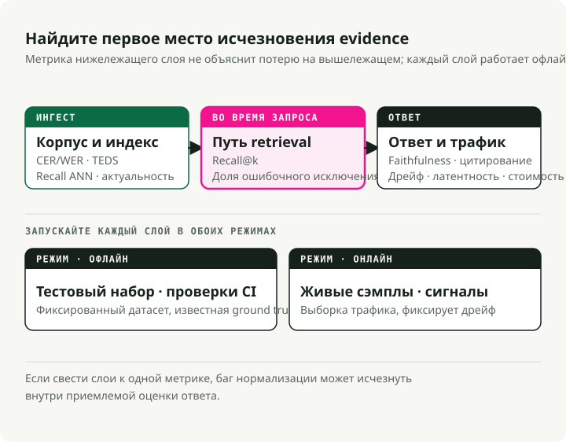
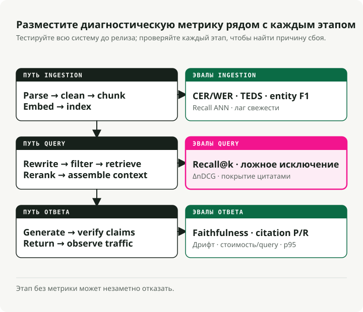
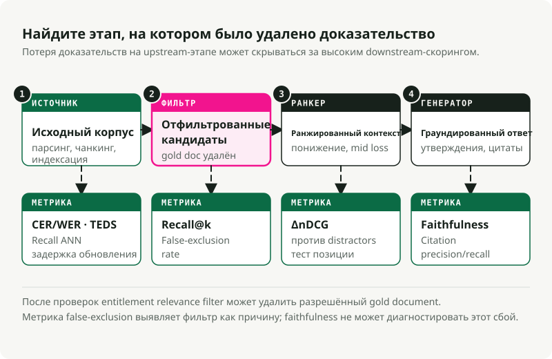

Автоматический перевод
Эта статья была автоматически переведена с оригинальной английской версии.
Оценка RAG: показатели для каждого этапа производственной системы RAG
Часть 1 из серии «Производственная RAG»
Система RAG с неисправными фильтрами может работать месяцами, прежде чем кто-либо это заметит. Пайплайн возвращает ответы, панели мониторинга задержек остаются в зелёном цвете, и единственным признаком проблемы является то, что сами ответы содержат незначительные ошибки. Однако такие «незначительные ошибки» не заставляют никого беспокоиться.
Лучшие логи не помогут выявить подобные проблемы. Зато оценка может — но только в том случае, если она включает специальные показатели для каждого этапа пайплайна. Эта статья — именно тот руководство, которого мне хотелось бы иметь, когда я пытался определить, какие показатели действительно имеют значение.
!!! совет «Хотите пропустить описание и сразу запустить код?»
Я объединил метрики, описанные в этой статье, в отдельный репозиторий, где можно их запустить: [`slavadubrov/rag-evals-demo`](https://github.com/slavadubrov/rag-evals-demo). `make eval` применяет полный набор метрик — показатели поисковой выдачи, гибридные методы в сочетании с RRF, улучшение качества ранжирования с помощью реранкера, фильтрация ложных исключений, показатель верности результатов, проблема «затерянных» элементов, использование LLM в качестве судьи с митигацией предвзятости, а также показатель задержки — к корпусу SciFact. `make benchmark` совмещает технику сегментации данных, методы эмбеддинга и модели LLM для генерации отчёта в формате Markdown. В ноутбуках с номерами 00–09 рассматривается каждый показатель по отдельности; используется тот же словарный запас, что и в данной статье, приводятся только числовые значения, Docker не применяется (используется встроенная версия Qdrant).
Кратко
- Оценка определяет функциональность системы. Этап без метрик — это этап, который работает незаметно для пользователя.
- Полезная стек-архитектура для оценки включает в себя процессы загрузки данных, поиска информации, обоснования генерируемого контента, соответствие онтологии и анализ сигналов от самой системы. Раги, TruLens, DeepEval, Arize Phoenix, и TREC 2024 — секция RAG Предоставляются соответствующие инструменты. Однако они не выбирают метрики за вас.
- В случае RAG, основанного на метаданных и онтологиях, наиболее распространённой проблемой является «тихий фильтр». Неверная метка или хрупкое строгое условие приводят к тому, что показатель воспроизводимости снижается до нуля. Показатель точности может казаться в порядке, поскольку модель честно сообщает: «Я не знаю». Дальнейший анализ проводится более детально для отдельных разделов. Используйте этот раздел в качестве указателя.
Таблица решений для оценки RAG
Используйте эту таблицу в качестве отправной точки перед выбором фреймворка. Подходящая метрика зависит от способа возникновения ошибок, который вы пытаетесь выявить, а не от названия инструмента.
| Вопрос | Семейство метрик | Используйте это в следующих случаях: | Остерегайтесь |
|---|---|---|---|
| Сохранялась ли структура исходного текста в процессе парсинга? | Степень полноты извлечения, охват таблиц и рисунков | PDF-файлы, слайды, сканы и HTML-страницы попадают в корпус данных. | Даже текст с аккуратным внешним видом может содержать пропущенные подписи к изображениям, сноски или некорректную структуру таблицы. |
| Были ли найдены при поиске правильные доказательства? | Recall@k, nDCG@k, MRR, точность/память в контексте | Вы можете помечать соответствующие фрагменты или документы | Жесткий фильтр метаданных может исключить соответствующий документ ещё до начала процесса ранжирования. |
| Улучшило ли переранжирование список кандидатов? | Улучшение показателя реранкинга, Precision@1, изменение nDCG | Кросс-энкодеры или ранжировщики LLM располагаются после этапа извлечения информации. | Измеряйте задержку и стоимость с учётом улучшения качества |
| Использовался ли в ответе соответствующий доказательный материал? | Точность, обоснованность, поддержка цитирования | Ответ приводит ссылки на документы или основывается на фактах, указанных в контексте. | Преданность формату не может выявить ошибки парсинга или некорректный поиск данных. |
| Является ли система стабильной в производственной среде? | Дрейф, регенерация, резервный режим, задержка p95, стоимость за ответ | Изменения в трафике после запуска | Для поддержания калибровки системы телеметрии в производственной среде требуется периодический человеческий анализ выборочных данных. |
Для более краткого сравнения инструментов см. Лучшие инструменты и метрики оценки RAG в 2026 году## Часть 1 — Почему сначала оценка
Ключевой показатель
В проекте типа RAG схема архитектуры не должна быть первым результатом работы. Первым должен стать набор данных для оценки.
Вы не можете выбирать между алгоритмами BM25 и плотного поиска, рекурсивным и семантическим разбиением на фрагменты, а также методами Cohere Rerank и BGE, пока не определите, что именно вы пытаетесь оптимизировать. «Лучшие ответы» — это не метрика. Метрикой является такой показатель, как «степень точности ≥ 0,85 для набора из 200 запросов, охватывающего три основные цели использования системы, при задержке обработки p95 < 1,5 секунды и коэффициенте ошибочного исключения элементов < 2%».
Сначала необходимо определить структуру тестирования, прежде чем писать код для поиска информации. Первая версия такой структуры будет неверной, и её придётся корректировать. Изменение метрики гораздо дешевле, чем правка уже запущенной системы.
Три уровня, а не одна цифра
Современные решения типа RAG представляют собой конвейер, поэтому оценка также должна выполняться в виде конвейера. Одна-единственная цифра не может отразить все возможные сценарии сбоев.
Оценка в производственных условиях включает три уровня: оффлайн-оценку (правильно ли была подготовлена база знаний?), онлайн-оценку (были ли найдены и использованы подходящие доказательства для данного запроса?) и оценку после генерации ответа (является ли ответ точным и поддаётся проверке?). Каждый уровень задаёт свой вопрос. Если объединить их в один балл, можно упустить базовые ошибки, такие как сбой в процессе нормализации данных, который приводит к снижению показателя воспроизводимости результатов.

Такое же разделение помогает четко разграничить онлайн- и оффлайн-оценку. Оффлайн-тестирование проводится на фиксированном наборе данных с известными эталонными ответами. Оно позволяет получать воспроизводимые результаты, упрощает процесс итераций и является оптимальным инструментом для выбора компонентов, проведения сравнений типа A/B и настройки контрольных точек в процессе интеграции. Онлайн-тестирование выполняется в реальном трафике. Оно позволяет зафиксировать такие показатели, которые невозможно симулировать в оффлайн-режиме: скорость обновления данных, время пребывания на странице, действия пользователя и реальные изменения запросов. Однако такой метод сопровождается шумом и затрудняет точную аналитику.
Для эффективной работы необходимы оба подхода. Тестирование исключительно в оффлайн-режиме не позволяет выявить изменения в реальных условиях работы системы, тогда как тестирование исключительно в онлайн-режиме затрудняет воспроизведение регрессий. Сочетание обоих методов требует дополнительных усилий, но это единственный способ получить полезную информацию как до, так и после запуска продукта.
Оценка на уровне компонентов против оценки «от начала до конца»
Существуют две распространённые ошибки. Оценка исключительно «от начала до конца» позволяет определить, что система не работает, но не указывает, где именно возникла проблема. Оценка только отдельных компонентов может показать, что все части функционируют корректно, при этом вся система всё равно терпит неудачу. Решением является использование нескольких ключевых метрик «от начала до конца» для принятия решений о дальнейшей работе над системой или о её отказе, а также метрик отдельных компонентов для диагностики. Метрики по поиску помогают выявить регресии в модуле поиска, метрики генерации — регресии в модуле генерации ответов, а проверка корректности ответа
| Фреймворк | Лучшие результаты при | Где происходит сбой |
|---|---|---|
| RAGAS | Метрики RAG без использования референсов (надёжность, релевантность ответа, точность/покрытие контекста); фактический словарный запас | Стоимость использования судьи в формате LLM; непрозрачные компоненты оценки при отладке; параметры по умолчанию ориентированы на английский язык. |
| ARES | Обученный классификатор оценивает результаты по каждому каналу обработки данных; требуется меньше аннотаций по сравнению с подходами в стиле RAGAS; высокая точность при работе с близкородственными системами. | Более громоздкая конфигурация; для работы требуется фактически обучать модели. |
| TruLens | Композиционные функции обратной связи с высокой степенью объяснимости; трейсы OpenTelemetry; подходящие для промышленного использования | В метриках, специфичных для RAG, указано меньше информации о количестве встроенных батарей по сравнению с RAGAS. |
| DeepEval | Единичные тесты в стиле Pytest для оценки выводов больших языковых моделей; G-Eval, пользовательские метрики, интеграция с пайплайнами CI/CD | Интенсивное использование модуля оценки LLM = резкий скачок затрат |
| Arize Phoenix | Мощная визуализация трейсинга и эмбеддингов; визуальное выявление смещения эмбеддингов; нативно для OTEL | |
| Рубрика RAG на конференции TREC 2024 | Публичный бенчмарк для оценки качества генерируемых фрагментов (AutoNuggetizer), проверки возможностей эвалуации и уровня плавности текста в рамках MS MARCO Segment v2.1 | Это не инструмент для выполнения в режиме реального времени, а тестовая среда для калибровки. |
Мой стандартный набор инструментов включает RAGAS для работы с словарём метрик, DeepEval для контроля качества на этапе CI, Phoenix для отслеживания процессов в продакшене, а также пользовательский код для расчёта метрик, специфичных для конкретной онтологии. Любая выбранная изначально система рано или поздно окажется недостаточной. Выбирайте ту фреймворковую платформу, которая облегчает создание пользовательских метрик.
Для тестирования производительности используйте BEIR (Thakur и др., NeurIPS 2021) — пример генерализации при поиске с нулевыми примерами. MTEB для общего качества эмбеддингов, MIRACL для мультиязычного поиска информации, и TREC 2024 — секция RAG для оценки RAG в режиме «от начала до конца».
Часть 2 — Пайплайн с точками оценки
Продакшн-система RAG гораздо сложнее простой последовательности действий вроде «генерация эмбеддингов документов, извлечение фрагментов, вызов LLM». Любой этап между получением документов и передачей ответа может сопровождаться сбоями.

Каждый этап на диаграмме имеет хотя бы один показатель эффективности. Этап, не имеющий такого показателя, может сработать некорректно, и никто этого не заметит.
Три канала соответствуют этапам, на которых возникают сбои. Офлайн-канал охватывает всё, что происходит до поступления запроса: парсинг, очистку данных, разбиение на фрагменты, генерацию векторных представлений и индексацию. Онлайн-канал отвечает за все операции после поступления запроса: переписывание формулировки, поиск информации, переранжирование результатов и сбор контекста. Постгенерационный канал занимается проверками после того, как модель сформирует ответ: проверка соответствия исходным данным, верификация цитат, выявление признаков дрейфа параметров и анализ телеметрии из продакшена.
Ошибки накапливаются по всей цепочке обработки. Некорректный парсинг ограничивает возможности разбиения данных на фрагменты; плохое разбиение затрудняет поиск нужной информации; неэффективный поиск влияет на качество переранжирования результатов; а некорректное переранжирование снижает качество генерируемого ответа. Проверка соответствия исходным данным оценивает только окончательный ответ, но никогда не учитывает первопричины проблем на более ранних этапах.
Часть 3 — Оценка офлайн-процессов ввода данных
Многие сбои в системах RAG в продакшене возникают на этапе ввода данных. Система корректно работает с отформатированными тестовыми документами, но терпит неудачу при обработке реальных PDF-файлов, сканов, таблиц и неструктурированных страниц корпуса.
Получение документов и их парсинг
Что необходимо измерять:
- Полнота извлечения текста:
extracted_chars / expected_charsдля маркированного образца — рассчитывается по классу документа. Канонического пакета не существует; необходимо написать небольшой фреймворк для сравнения вывода парсера с вручную отредактированным эталоном. Обращайте внимание на отсутствующие сноски, заголовки и подписи. -
Точность OCR: CER (коэффициент ошибок символов) и WER (коэффициент ошибок слов), стандартные метрики для обработки речи и OCR:
\[ \text{CER} = \frac{S + D + I}{N}, \qquad \text{WER} = \frac{S_w + D_w + I_w}{N_w} \]где \(S\), \(D\), \(I\) обозначают замены, удаления и вставки на уровне символов, а \(N\) — количество исходных символов (с подстрочной буквой \(w\) для версии слова). Уровень CER в пределах 1–2% считается приемлемым для печатного текста; значения выше 10% делают его непригодным к использованию. Для рукописного или мультиязычного материала уровень до 20% всё ещё может оставаться работоспособным. Расчёты выполняются с
jiwer(jiwer.cer(refs, hyps),jiwer.wer(refs, hyps)) или HuggingFaceevaluate. Для корпусов оценки, FUNSD и SROIE Это публичные тестовые наборы.from jiwer import cer, wer refs = ["Mars has two moons, Phobos and Deimos."] hyps = ["Mars has two m00ns, Phobos and Deirnos."] print(f"CER = {cer(refs, hyps):.3f}") # CER = 0.077 print(f"WER = {wer(refs, hyps):.3f}") # WER = 0.286 -
Точность извлечения таблицы: показатель TEDS (похожесть на основе дистанции редактирования деревьев) оценивает степень сходства предсказанной деревянной структуры HTML-таблицы с эталонной, нормируя результат по размеру более крупной из деревьев. Источник: Чжун и др., 2020 (PubTabNet):
\[ \text{TEDS}(T_a, T_b) = 1 - \frac{\text{EditDist}(T_a, T_b)}{\max(|T_a|, |T_b|)} \]TEDS использует как структуру (строки, столбцы, области), так и содержимое ячеек; TEDS-S удаляет содержимое и оценивает только структуру. Пример реализации: PubTabNet’s
teds.py(использует)aptedвнутри системы). Что касается корпусов для оценки, см. PubTabNet. FinTabNet, а также SciTSR. Наивные парсеры часто не справляются с таблицами; проведите тестирование перед тем, как полагаться на них. -
Сохранение макета/структуры: порядок заголовков, целостность списков, порядок чтения в многоколоночных PDF-файлах. Используйте DocLayNet для маркированного тестового набора; для сравнения готовых парсеров,
unstructured,pymupdf, и парсер VLM вродеdoclingпокрывать большую часть возможных вариантов дизайна.
Мое мнение: проведите сравнительные тесты трех парсеров (базовая версия Tesseract, модель VLM-OCR и кандидат от вашего поставщика) на стратифицированной выборке реальных типов документов (чистые сканы, фотографии, страницы с большим количеством таблиц, многоязычные документы, математические формулы, рукописный текст) при фиксированном разрешении. Предоставьте показатели CER/WER для каждого типа документов, а также TEDS для страниц с таблицами. Без этого вы будете только гадать.
- Точность удаления шаблонного кода: точность/покрытие по сравнению с метками шаблонных фрагментов, добавленными людьми. Агрессивное удаление приводит к потере релевантного контента; нерешительное удаление загрязняет векторные представления. Инструменты для сравнения:
trafilatura,jusText,Resiliparse. Барбареси (2021) провести сравнительные тесты напрямую между ними. - Нормализация Unicode: процент документов, дающих идентичные результаты в форматах NFC и NFKC (рассчитывается с использованием стандартной библиотеки)
unicodedata.normalize) является полезным сигналом дрифта. Именно несоответствия между символами приводят к тому, что нулевой по ширине соединительный элемент и похожие на него символы разрушают показатели восстановления информации. - Точность обнаружения языка: показатель F1 на маркированной мультиязычной выборке. Имеет критическое значение для мультиязычных индексов. Используйте
fasttext-langdetect(Facebook’slid.176),lingua-py, илиcld3; FLORES-200 является стандартным тестовым заданием для языков с ограниченными ресурсами. -
Эффективность удаления дубликатов (MinHash / LSH): точность/воспроизводимость вашего детектора близких дубликатов на основе вручную маркированного набора данных. Основная идея заключается в оценке сходства по формуле Джаккара \(J(A, B) = \frac|A ∩ B|}{|A ∪ B|\)$ между наборами документов с помощью \(k\) хешей от случайных перестановокБродер, 1997) и объединение почти одинаковых записей с использованием метода LSH-бэндингаИндик и Мотвани, 1998). По умолчанию используется стандартный MinHash с 128 функциями хеширования и методом LSH-бэндинга, настроенным на порог Джаккара в диапазоне 0,7–0,85; проведите тестирование на своих данных, поскольку оптимальный порог зависит от конкретного корпуса. Отслеживайте показатель частоты ложных объединений (что приводит к ошибочным ответам) отдельно от показателя частоты упущенных объединений (что приводит к расточительству пространства индекса).
datasketchэто канонический пакет Python:from datasketch import MinHash, MinHashLSH def shingles(text: str, k: int = 5) -> set[str]: text = text.lower() return {text[i:i + k] for i in range(len(text) - k + 1)} def to_minhash(text: str, num_perm: int = 128) -> MinHash: m = MinHash(num_perm=num_perm) for s in shingles(text): m.update(s.encode("utf-8")) return m docs = { "d1": "Mars has two moons, Phobos and Deimos.", "d2": "Mars has two moons, Phobos and Deimos!", # near-dup "d3": "Curiosity rover landed on Mars in 2012.", } lsh = MinHashLSH(threshold=0.8, num_perm=128) for did, text in docs.items(): lsh.insert(did, to_minhash(text)) print(lsh.query(to_minhash(docs["d1"]))) # ['d1', 'd2'] -
Удаление PII: точность и воспроизводимость, рассчитываемые отдельно для каждого типа сущностей (электронные адреса, номера социального страхования, имена, адреса). Ошибки в воспроизводимости создают риски несоответствия нормативным требованиям; ошибки в точности снижают качество ответов. Точку равновесия необходимо определить с юридической командой. Инструменты: Microsoft Presidio (самый полный)
scrubadubили отрегулированная модель NER на меткированном наборе данных.
Разбиение на фрагменты — этап, который тихо определяет процесс поиска
Чанкирование является одним из наиболее важных факторов при принятии решений в архитектурах типа RAG. Неверная стратегия может привести к значительному снижению показателей воспроизведения данных даже при использовании одинаковых эмбеддингов. Тесты производительности NVIDIA за 2024 год принес наибольшую точность при минимальном дисперсионном расхождении для страницно-структурированных документов; семантическое разбиение на фрагменты (группировка соседних предложений на основе сходства в эмбеддингах и разделение на границах с низким сходством — реализовано в) LangChain’s SemanticChunker и LlamaIndex’s SemanticSplitterNodeParser) может улучшить точность восстановления по сравнению с методом разбиения на фиксированные окна; рекурсивное разделение символов (сначала пробуйте разделение на абзацы, затем на предложения, после чего — на слова, пока каждый фрагмент не соответствует целевому размеру — см. LangChain’s RecursiveCharacterTextSplitter) объём в диапазоне 400–512 токенов с уровнем перекрытия 10–20% остаётся хорошим стандартным значением для обычного текста.
Показатели для отслеживания:
- Согласованность фрагментов: \(\text{coherence} = \overline{\cos(s_i, s_j)}_{\text{внутри}} - \overline{\cos(s_i, s_j)}_{\text{пересекая границу}}\), где \(s_i\) — эмбеддинги предложений. Здоровые фрагменты обладают внутренней схожестью и различиями на границах. Вычисления выполняются с использованием
sentence-transformersплюсscikit-learn'scosine_similarity. - Качество границ: оценка человеком вопроса «является ли этот разрез целесообразным?» для отдельного образца, плюс структурная проверка на то, что фрагменты не разрывают таблицы, списки или нумерованные разделы (это самая распространённая ошибка в продакшене).
- Оптимальный размер фрагментов: протестируйте размеры токенов (128, 256, 512, 1024) и постройте график Recall@k в зависимости от размера на вашем золотом наборе. Выберите точку наибольшего улучшения качества; не следует опираться на рекомендации из учебников.
- Эффективность перекрытия: изменяйте степень перекрытия (0%, 10%, 20%, 30%) и измеряйте значение Recall@k. В большинстве корпусов при уровне перекрытия выше ~20% прирост качества становится значительно меньше.
- Надёжность атрибуции фрагментов: процент фрагментов, сохраняющих подлинный указатель на источник (номер страницы, анкор раздела, ID документа). Для обеспечения возможности аудита это крайне важно.
- Позднее и раннее разбиение на чанки: опоздалое разбиение на чанки (Günther и др., 2024) включает в себя весь документ, после чего выполняет его сегментацию, сохраняя при этом глобальный контекст (пример реализации приведён в
jina-embeddings-v3). Контекстуальный поиск (Anthropic, 2024) добавляет в начало каждого фрагмента контекст, сгенерированный большой языковой моделью. Оба подхода увеличивают затраты. Перед применением любого из них проведите тестирование на собственном корпусе данных.
Мое мнение: структурное разделение на фрагменты (разбиение по заголовкам, таблицам и разделам — реализуемое с помощью парсеров вроде) unstructured.io или путем прослеживания дерева синтаксического анализа, уже сгенерированного вашим парсером, используется недостаточно активно. Если ваши документы имеют структуру, воспользуйтесь ею перед добавлением гистеристик сходства. Рекурсивное разделение на символы является базовым подходом; семантическое разбиение на фрагменты оправдывает дополнительные затраты в основном для неструктурированного текста.
Извлечение и обогащение метаданных
- Точность/воспроизводимость/F1 NER: по типу сущности, на маркированном подмножестве данных. В стиле стандартов CoNLL/MUC. Рассчитывается с использованием
seqeval(from seqeval.metrics import f1_score) для версии с учётом меток BIO/IOB, либо scikit-learn для сравнения наборов интервалов. CoNLL-2003 и OntoNotes 5.0 являются стандартными эталонными корпусами данных. - F1 для извлечения связей: имеет ещё более важное значение для систем, основанных на онтологиях. Необходимо вручную пометить 200 документов. TACRED и DocRED являются публичными критериями оценки; для производственного кода,
opennreиspaCyПайплайны для обработки связей представляют собой разумную отправную точку. - Точность извлечения заголовков/названий: точное совпадение плюс нормализованная степень схожести по алгоритму Левенштейна (\(1 - \frac{\text{edit\_dist}(a, b)}{\max(|a|, |b|)}\)) по сравнению с истинными значениями —
python-LevenshteinилиrapidfuzzПредоставлю и то, и другое в одном вызове. - Сохранение иерархических метаданных: процент фрагментов, которые корректно сохраняют информацию о своем родительском разделе, родительском документе и пути преемственности. Именно этот показатель определяет, сможет ли ваш RAG отвечать на вопросы типа «Что говорится в потомке политики X?».
Генерация эмбеддингов
- Критерии выбора моделей: MTEB для оценки общих способностей (ключевым показателем является nDCG@10); Пакет Python MTEB позволяет воспроизвести таблицу лидеров локально), BEIR для генерализации без обучения на примерах. MIRACL Для мультиязычных задач ведущие модели поиска сгруппированы в узком диапазоне показателя nDCG@10, однако значения MTEB на английском языке плохо предсказывают производительность моделей при работе с языками с ограниченными ресурсами.
- Оценка в специфических областях: не стоит полагаться на общие эталонные тесты для корпусов данных конкретной области. Необходимо создать «золотой набор» данной области из 200–500 пар запросов/документов и использовать его для переранжирования кандидатских моделей.
ranxилиpytrec_eval. Я неоднократно наблюдал, как модель, занимающая 5-е место в MTEB, обгоняла модель, находящуюся на 1-м месте, на 15 и более баллов в конкретной области применения. - Обнаружение смещения эмбеддингов: отслеживание дистрибутивного смещения по метрике KL или смещения, основанного на структуре модели, между фиксированным эталонным окном и динамическими эмбеддингами в режиме производства; стабильность на основе принципа ближайшего соседа для фиксированного набора тестовых элементов представляет собой самый простой практический индикатор.
evidentlyиalibi-detectОба решения реализуют детекторы смещения на основе моделей и статистических методов. Evidently's сравнительное исследование По умолчанию предпочтение отдается обнаружению смещения на основе моделей. - Многовекторный против одновекторного: поздняя интеракция (ColBERT / ColBERTv2 — см. Кхаттаб и Захария, 2020; реализации для сравнения RAGатуйль и PyLate) как правило, превосходит методы внедоменной обработки за счёт затрат на хранение в 6–10 раз меньших (при использовании компрессии в стиле PLAID; в несжатом виде размер значительно выше). Это оправдано, когда ваш корпус данных сильно отличается по распределению от того, на котором обучалась модель эмбеддингов. В остальных случаях лучше оставиться при одновекторных решениях.
Построение индекса
- Recall@k при аппроксимации: сравнивайте индекс метода ближайшего соседа с аппроксимацией (ANN) с точной базовой моделью методом перебора при одинаковом значении k — в FAISS, а именно
IndexHNSWFlat(или)IndexIVFFlat) противIndexFlatIP/IndexFlatL2. Стремитесь к уровню воспроизведения ≥95% при @10 по сравнению с постоянным значением.ann-benchmarksПроект отслеживает кривые Парето для показателей воспроизводимости и QPS в различных библиотеках. - Настройка HNSW: HNSW (Hierarchical Navigable Small World — слоистая графика близости; см. Mалков и Яшунин, 2018, реализовано в
hnswlib, инструмент FAISSIndexHNSWFlatи большинство векторных БД) предоставляют три настройки:M(разветвление графа),efConstruction(предполагаемая ширина во время сборки)efSearch(Ширина кандидатов во время запроса). Практические значения по умолчанию: M=16–32, efConstruction=150, efSearch начинается с 100 и увеличивается до тех пор, пока не наступит плато в показателях воспроизведения. Для набора данных размером 10 М векторов при efSearch=500 можно достичь 98% воспроизведения за 5 мс; при efSearch=100 этот показатель снижается до 85% за 1 мс. Выбирайте значение efSearch в соответствии с требованиями вашего набора для оценки. - Настройка IVF: IVF (обратный индекс файлов — разбиение векторов с помощью алгоритма k-means на
nlistклетки, а затем во время выполнения запроса сканироватьnprobeближайшие ячейки; см. документацию FAISSIndexIVFFlatиIndexIVFPQ). Используйтеnlist≈ √N в качестве начальной гиперпараметризации, которую необходимо отрегулироватьnprobeво время выполнения. IVF, как правило, обрабатывает фильтрованное поиск более эффективно, чем HNSW, что имеет важное значение для систем, основанных на онтологиях и содержащих большое количество предикатов метаданных. - Задержка обновления свежести: время от коммита документа до его доступности для поиска. Необходимо отслеживать значения p50 и p99. Для систем с регуляторными требованиями также следует отслеживать процент запросов, обрабатываемых с использованием устаревших индексов.
Часть 4 — Оценка онлайн-инференса
Именно в онлайн-режиме формируются большинство показателей производительности в продакшене. Многие команды ограничиваются метрикой Recall@k. Однако этого недостаточно.
Понимание и переписывание запросов
- Качество расширения запросов: улучшение показателя Recall@k на вашем золотом наборе при использовании расширенного запроса по сравнению с исходным. Если при сложных запросах улучшение составляет менее +5%, ваш инструмент расширения приносит больше вреда, чем пользы. Традиционные базовые методы вроде PRF (псевдообратной связи по релевантности) RM3 и Бо1 они по-прежнему являются полезными проверками на корректность; алгоритмы расширения на основе ЯИ должны превзойти их результаты.
- Оценка HyDE: HyDE (Gao и др., 2022) генерирует гипотетический ответ с помощью LLM, встраивает его и выполняет поиск на основе этого ответа — это полезный инструмент, однако он увеличивает задержку обработки и создаёт риски возникновения галлюцинаций. Необходимо оценить его эффективность с точки зрения улучшения показателя Recall@10 при запросах из внешних доменов (где он проявляет себя наилучшим образом) и убедиться в отсутствии снижения качества ответов при запросах из внутренних доменов (где он может нанести вред). Его следует использовать в качестве запасного варианта при низкой уверенности в результатах поиска, а не в качестве стандартного решения. Для проверки достоверности результатов, полученных на основе гипотетических ответов, рекомендуется применять кросс-энкодер для дополнительной ранжировки.
- Генерация множественных запросов: объединение результатов метода Recall@k для N вариантов переписывания по сравнению с одним запросом. Эффективность резко снижается после 3–4 вариантов переписывания. Реализации: LangChain’s
MultiQueryRetriever, LlamaIndex’sQueryFusionRetriever- Точность классификации намерений: стандартная точность/воспроизводимость/F1 для каждого намерения (рассчитывается сsklearn.metrics.classification_report), однако ключевым показателем является правильность маршрутизации — запускается ли соответствующий каскад обработки? - Адаптивная маршрутизация: Адаптивный RAG (Jeong и др., NAACL 2024) показывают, что не каждый запрос требует одинаковой стратегии поиска. Необходимо рассматривать точность маршрутизатора поиска как задачу классификации на основе меткированного набора категорий: «поиск не требуется / однократный поиск / итеративный поиск».
Метрики поиска
Это базовые метрики. Если вы не отслеживаете их, вы не сможете определить, улучшается ли процесс поиска.
| Метрика | Что оно измеряет | Когда использовать |
|---|---|---|
| Recall@k | доля запросов, в которых хотя бы один релевантный документ находится среди первых k | Самый важный показатель поиска для RAG; если он низкий, всё остальное уже не имеет значения. |
| Precision@k | доля элементов из набора top-k, являющихся релевантными | полезно, когда окно контекста является узким местом |
| MRR | среднее значение 1/ранг первого релевантного документа | когда пользователи рассматривают только топ-1 или топ-3 |
| nDCG@k | взвешенная прибыль с учетом позиционного дисконта и оценок релевантности | стандартная метрика поиска для оценки степени релевантности |
| MAP | среднее значение средней точности по всем запросам | когда важен весь ранжированный список |
| Коэффициент попадания@k | бинарная версия Recall@k | быстрый метрик проверки корректности |
| Покрытие | процент «золотых» документов, когда-либо извлечённых в ходе всех запросов | обнаруживает систематические пробелы в индексе |
Формулы для справки (бинарная релевантность с множеством релевантных документов \(R_q\) для запроса \(q\), причём \(\text{rel}_i = 1\), если \(i\)-й полученный документ находится в \(R_q\)):
Для оценки степени релевантности \(\text{rel}_i \in \{0, 1, 2, \dots\}\); бинарный nDCG представляет собой специальный случай, используемый в приведённом ниже коде. MAP — это среднее по всем запросам значения \(\text{AP}_q = \frac{1}{|R_q|\sum_{i: \text{rel}_i = 1} \text{Precision@}i\). См. Мэннинг, Рагхаван, Шютце, «Введение в поиск информации»Глава 8 — для выводов.
Для кода, предназначенного для производственной эксплуатации, используйте ranx, pytrec_eval, или ir_measures — они реализуют весь набор метрик TREC и корректно обрабатывают градуированную релевантность. Разумные начальные цели: Recall@10 ≥ 0.85, MRR ≥ 0.6, nDCG@10 ≥ 0.7. Их следует устанавливать на основе реалистичного золотого набора данных, а не брать из учебных примеров.
Тестовый фреймворк для этого довольно прост. Его можно запустить из Jupyter-ноутбука ещё до того, как будет выбрана база данных векторов.
from math import log2
from statistics import mean
# synthetic gold set: query_id -> set of relevant doc ids
gold = {
"q1": {"d3"},
"q2": {"d7", "d2"},
"q3": {"d11"},
"q4": {"d5"},
}
# ranked retrieval results: query_id -> ranked list of doc ids (top-10)
runs = {
"q1": ["d8", "d3", "d1", "d4", "d2", "d9", "d6", "d10", "d12", "d13"],
"q2": ["d2", "d6", "d4", "d7", "d1", "d3", "d8", "d11", "d5", "d9"],
"q3": ["d11", "d2", "d3", "d4", "d1", "d6", "d7", "d8", "d10", "d12"],
"q4": ["d1", "d2", "d3", "d6", "d8", "d9", "d10", "d12", "d13", "d14"],
}
def recall_at_k(ranked, gold_set, k):
if not gold_set:
return 0.0
hit = sum(1 for d in ranked[:k] if d in gold_set)
return hit / len(gold_set)
def reciprocal_rank(ranked, gold_set):
# MRR contribution per query: 1/rank of the first relevant doc.
for rank, d in enumerate(ranked, start=1):
if d in gold_set:
return 1.0 / rank
return 0.0
def ndcg_at_k(ranked, gold_set, k):
# binary relevance: rel ∈ {0, 1}
gains = [1.0 if d in gold_set else 0.0 for d in ranked[:k]]
dcg = sum(g / log2(i + 2) for i, g in enumerate(gains))
# ideal DCG: all gold docs ranked first, capped by k
n_gold_in_topk = min(k, len(gold_set))
idcg = sum(1.0 / log2(i + 2) for i in range(n_gold_in_topk))
return dcg / idcg if idcg else 0.0
K = 5
print(f"Recall@{K}: {mean(recall_at_k(runs[q], gold[q], K) for q in gold):.3f}")
print(f"MRR: {mean(reciprocal_rank(runs[q], gold[q]) for q in gold):.3f}")
print(f"nDCG@{K}: {mean(ndcg_at_k(runs[q], gold[q], K) for q in gold):.3f}")
# Recall@5: 0.750
# MRR: 0.625
# nDCG@5: 0.627
Это и есть ваша проверочная гейт-система для получения данных. Подключите её к золотому набору из 200 запросов и запускайте на каждом PR. Если хотя бы один из трёх показателей ухудшится, заблокируйте слияние и устраните это ухудшение.
Сопутствующий репозиторий фиксирует именно эти числа выше.Recall@5 = 0.750, MRR = 0.625, nDCG@5 = 0.627) в качестве теста единицы tests/test_retrieval_metrics.py; журнал 01 проводит тестирование показателей Recall@k / MRR / nDCG на реальном индексе SciFact, причем инструментарий, адаптированный для производственных условий, находится в evaluation/retrieval.py### Гибридный метод поиска и слияние рангов на основе взаимности
BM25 (классический спарсинговый скорер лексикона из Robertson & Walker, 1994 — точное совпадение терминов с взвешиванием по принципу TF-IDF и нормализацией по длине, доступно в rank_bm25, Elasticsearch/OpenSearch и большинство поисковых систем), а также плотное слияние через Слияние рангов по принципу взаимности (Cormack, Clarke, Buettcher, SIGIR 2009) — с параметром k=60 это хороший стандартный вариант. Алгоритм RRF не зависит от используемой оценки, поэтому позволяет избежать проблем нормализации оценок, связанных с линейной интерполяцией. Если у вас более 50 пар замеченных запросов, попробуйте использовать конвексную комбинацию и отрегулируйте значение α. Гибридный подход в сочетании с реранкером на основе кросс-кодера обычно превосходит методы поиска, основанные исключительно на плотных или разреженных представлениях, в технических, лог-форматных и кодовых корпусах. В корпусах с высокой степенью семантичности преимущество может быть незначительным. Оценивайте эффективность на собственных данных — плохая конфигурация слияния данных может дать худшие результаты, чем использование только плотных представлений. Реализация этого алгоритма занимает всего несколько строк кода.
from collections import defaultdict
# two retrieval lanes: dense embeddings and BM25.
dense = ["d3", "d7", "d1", "d4", "d2", "d9", "d10"]
sparse = ["d2", "d3", "d8", "d1", "d11", "d4", "d6"]
def rrf(rankings: list[list[str]], k: int = 60) -> list[tuple[str, float]]:
"""Reciprocal Rank Fusion (Cormack et al., SIGIR 2009).
score(d) = sum over rankings of 1 / (k + rank(d))
Score-agnostic: only rank position matters. k=60 is the canonical default.
"""
scores: dict[str, float] = defaultdict(float)
for ranking in rankings:
for rank, doc in enumerate(ranking, start=1):
scores[doc] += 1.0 / (k + rank)
return sorted(scores.items(), key=lambda kv: kv[1], reverse=True)
fused = rrf([dense, sparse], k=60)
for doc, score in fused[:5]:
print(f"{doc} score={score:.5f}")
# d3 score=0.03252 <- rank 1 dense, rank 2 sparse
# d2 score=0.03178 <- rank 5 dense, rank 1 sparse
# d1 score=0.03150
Обратите внимание на то, чего не делает RRF: он никогда не анализирует сырые значения оценок сходства. Результиры работы инструмента типа dense retriever с коэффициентом косинуса 0.98 и результаты работы алгоритма BM25 с оценкой 17.4 нельзя напрямую сравнивать. Если привести их к одному масштабу с помощью z-оценок или метода минимум-максимум, это может привести к тому, что будет отдаваться предпочтение тому способу поиска, у которого наибольшая дисперсия в данной группе данных.
RRF использует исключительно ранг. Если система поиска размещает документ на позиции 2, этот голос имеет такую же ценность. 1 / (60 + 2), независимо от исходного балла, который его породил.
Гибридный подход + RRF в SciFact: журнал 02 сравнивает методы Dense, BM25 и RRF с учётом дельт за каждый запрос. Фьюзер, адаптированный для производственных условий, находится в retrieval/hybrid_rrf.py; tests/test_rrf.py фиксирует каноническую версию d3 / d2 / d1 заказ в k=60### Переупорядочивание
- ΔnDCG / ΔMRR: единственный объективный показатель для оценки эффективности переупорядочивателя — рост качества по сравнению с ситуацией без переупорядочивания на вашем «золотом» наборе данных, на той глубине, которую фактически использует ваше приложение. Рассчитывается путём измерения показателей поиска с применением и без применения переупорядочивателя к идентичным наборам кандидатов.
- Кросс-энкодер против би-энкодера: би-энкодер независимо эмбеддит запрос и документ (по одному вектору для каждого) и оценивает соответствие с помощью скалярного произведения; кросс-энкодер объединяет запрос и документ в один вектор и выполняет один проход, при котором модель учитывает оба элемента одновременно. Кросс-энкодеры практически всегда дают лучшие результаты с точки зрения релевантности, но за счёт необходимости выполнения дополнительного прохода для каждого кандидата. Пример реализации:
sentence-transformersCrossEncoder. В опубликованных тестах BGE-reranker-v2-m3 достигает времени обработки около 80 мс на 100 кандидатов на GPU и примерно 350 мс на CPU, при этом его качество сопоставимо с Cohere Rerank без дополнительных затрат. Рассматривайте эти значения как порядки величин — ваше оборудование и размер пакета данных повлияют на их значения. - Поэлементное сравнение против сравнения списка целиком: при поэлементном подходе оценки для каждой пары (запрос, документ) вычисляются независимо; при сравнении списка целиком оценивается весь список кандидатов одновременно, что позволяет модели напрямую оптимизировать цель ранжирования. Подход с сравнением списка целиком (BGE, ZeRank-2 с калиброванными выходными данными) обычно дает лучшие результаты по показателю nDCG; при поэлементном подходе проще устанавливать пороги. Калиброванные вероятности ZeRank-2 позволяют использовать простые
score > 0.7пороговые значения; чистые оценки BGE/MiniLM требуют настройки для каждого корпуса.
from sentence_transformers import CrossEncoder
reranker = CrossEncoder("BAAI/bge-reranker-v2-m3")
query = "How do I rotate database credentials in production?"
candidates = [
"Production database credentials are rotated via Vault every 30 days.",
"The new logo was unveiled at the all-hands meeting.",
"To rotate prod DB creds, run the `rotate-secrets` GitHub Action.",
]
scores = reranker.predict([(query, c) for c in candidates])
ranked = sorted(zip(candidates, scores), key=lambda x: -x[1])
for doc, score in ranked:
print(f"{score:+.3f} {doc}")
Механизм переранкинга зачастую является наиболее ценным дополнением к базовой пайплайне RAG. В большинстве корпусов, с которыми мне доводилось работать, его внедрение позволяет повысить значение Precision@1 на 15–40%. Если у вашей пайплайны RAG такого механизма нет, добавьте его прежде чем тратить время на более мелкие настройки процесса поиска информации.
Изменения показателей ΔnDCG и ΔPrecision@1 при использовании кросс-энкодера в SciFact: журнал 03; модуль: retrieval/reranker.py### Сбор контекста и проблема «потери информации на этапе обработки»
Именно здесь возникает множество ситуаций типа «хорошее извлечение данных, плохой ответ».
- Релевантность контекста: оценка релевантности для каждого фрагмента Rаги
ContextRelevancyили кросс-энкодер, агрегированный в виде среднего значения и процента фрагментов, находящихся ниже заданного порога. - Использование контекста: из числа фрагментов, находящихся в контексте, сколько из них было фактически цитировано или использовано в ответе. Рассчитывается как \(\frac\)|\text{цитируемые фрагменты}|}{|\text{загруженные фрагменты}|$ за обработку маркированного образца. Низкая степень использования (< 30%) означает, что вы платите за токены, которые вам не нужны.
- Обнаружение ситуации «потерянного в промежутке»: синтетическая оценка, при которой эталонный фрагмент размещается в позициях {first, middle, last} длинного контекста, и измеряется корректность ответа. Наблюдаемое U-образное снижение качества является реальным и задокументированным в Lю и др. (TACL 2023). Современные модели показывают лучшие результаты, чем модели 2023 года, однако смещение остаётся проблемой. Меры по снижению влияния: сначала провести переранжирование, а затем изменить порядок элементов top-k так, чтобы фрагмент с наивысшей оценкой оказался первым или последним (в LangChain).
LongContextReorderделает именно это), либо агрессивно сжимает средние фрагменты. Оценивать результаты следует с использованием метода позиционной стратификации, а не только на основе общего балла. Готовый к запуску пример оценки с применением позиционной стратификации доступен в журнал 06 (модуль:evaluation/lost_in_middle.py). - Сжатие контекста: указывайте коэффициент сжатия (количество входных токенов / количество выходных токенов) наряду с корректностью ответа. Инструменты: LangChain’s
ContextualCompressionRetriever, LongLLMLingua. Если сжатие приводит к снижению точности более чем на 2 пункта, значит, вы зашли слишком далеко.
Часть 5 — Уровень ложного исключения фильтра
Этот показатель имеет отдельный раздел, поскольку большинство команд его игнорируют, а это приводит к реальным сбоям в производственной среде.
Такой строгий фильтр метаданных, как tenant_id = X AND product = Y AND locale = en-US Этот метод может довести эффективную воспроизводимость до нуля без изменения стандартных метрик поиска. Золотой документ исключается до начала процесса ранжирования. Показатель Recall@k вычисляется на основе оставшегося набора кандидатов, поэтому он может казаться в порядке. Показатель верности вычисляется на основе полученного контекста, так что и он также может выглядеть нормально; модель верно указала «Я не знаю».
Красная ветвь в дереве представляет собой типичную проблему: правильный документ существует, но фильтр удаляет его ещё до процедуры поиска.

Метрика
filter_false_exclusion_rate =
(# queries where gold doc was excluded by metadata filter) /
(# queries with at least one gold doc)
Чтобы его рассчитать, необходимо (а) идентификаторы документов с истинными значениями для каждого запроса на оценку и (б) инструментарий для логирования применяемых условий фильтрации, а не только окончательных результатов. Разумной целью является уровень ошибок менее 2% при работе с реальным трафиком. Если этот показатель выше, логика фильтрации приводит к снижению полноты восстановления данных.
Ниже приведена рабочая реализация, которая также иллюстрирует, почему такие сбои остаются незамеченными в случае примитивного подхода к реализации механизма поиска.
# A small worked example that drops recall to zero silently.
docs = [
{"id": "d1", "tenant": "acme", "locale": "en-US"},
{"id": "d2", "tenant": "acme", "locale": "en-GB"},
{"id": "d3", "tenant": "globex", "locale": "en-US"},
{"id": "d4", "tenant": "acme", "locale": "en-US"},
{"id": "d5", "tenant": "acme", "locale": "de-DE"},
]
queries = [
# the gold doc lives in en-GB but the dynamic filter forced en-US
{"qid": "q1", "gold": {"d2"}, "filter": lambda d: d["locale"] == "en-US"},
# the gold doc is correctly within the tenant filter
{"qid": "q2", "gold": {"d4"}, "filter": lambda d: d["tenant"] == "acme"},
# the gold doc is in a different tenant — silently dropped
{"qid": "q3", "gold": {"d3"}, "filter": lambda d: d["tenant"] == "acme"},
# the gold doc passes the filter (de-DE locale match)
{"qid": "q4", "gold": {"d5"}, "filter": lambda d: d["locale"] == "de-DE"},
]
def filter_false_exclusion_rate(queries, docs):
n_with_gold, n_excluded = 0, 0
for q in queries:
if not q["gold"]:
continue
n_with_gold += 1
survivors = {d["id"] for d in docs if q["filter"](d)}
if not (q["gold"] & survivors):
n_excluded += 1
return n_excluded / n_with_gold if n_with_gold else 0.0
rate = filter_false_exclusion_rate(queries, docs)
print(f"filter_false_exclusion_rate = {rate:.2%}")
# filter_false_exclusion_rate = 50.00%
# The trap: a recall harness that only iterates over the SURVIVORS will
# either skip the empty-gold queries or report perfect recall on a doomed set.
def naive_recall_over_survivors(queries, docs, k=10):
recalls = []
for q in queries:
survivors = [d for d in docs if q["filter"](d)][:k]
survivor_ids = {d["id"] for d in survivors}
denom = len(q["gold"] & {d["id"] for d in docs})
if denom == 0:
continue # silently drops the query
visible_gold = q["gold"] & survivor_ids
recalls.append(len(visible_gold) / denom)
return sum(recalls) / len(recalls) if recalls else 0.0
print(f"naive recall (filtered universe) = {naive_recall_over_survivors(queries, docs):.2%}")
# naive recall (filtered universe) = 50.00%
assert rate == 0.5
Половина запросов теряют свои документы с меткой «gold» из-за фильтрации. Примитивные метрики воспроизводимости показывают 50%, и вы вините модуль поиска. Однако показатель исключения документов указывает на реальную проблему — это ошибка в логике предиката. У двух запросов ответы были удалены ещё до того, как запустился модуль поиска. Ни одна модель не может восстановить документ, который уже был отфильтрован.
Указанный показатель в 50% воспроизводится в виде теста единицы в сопутствующем репозитории: tests/test_filter_exclusion.py::test_50_percent_exclusion_rate. Записная книжка 04 эксперимент выполняется в SciFact с синтетическими метаданными, что позволяет наблюдать, как реальный фильтр полностью устраняет показатель воспроизводимости; метрика времени выполнения (вместе с сопутствующими показателями точности/воспроизводимости) приведена здесь. evaluation/filter_exclusion.py### Вспомогательная метрика: точность и воспроизводимость предикатов
При динамической фильтрации (например, когда LLM извлекает предикаты фильтрации из запроса) рассматривайте модуль извлечения предикатов как классификационную модель и оценивайте его соответственно. Точность/воспроизводимость предикатов определяются на основе меткированного набора пар (запрос, правильный предикат). Если ваш модуль ошибается в 8% случаев и применяет жесткие фильтры, то воспроизводимость будет ограничена примерно 92%, и никакое переранжирование не поможет.
Жесткий буст против жесткого фильтра
Эта метрика вынуждает принять техническое решение. Используйте жесткие фильтры, когда корректность имеет двоичный характер: юрисдикция, границы ACL, версия «опубликовано» против «черновик». Используйте жесткие бусты, когда степень релевантности оценивается по шкале: предпочтения локали, свежесть данных, версия. Без измерения уровня исключений сложно распознать неверный выбор.
Правило принятия решения, поддающееся измерению:
For each filter predicate F:
hard_recall_F = retrieval_recall@k with F as a hard filter
soft_recall_F = retrieval_recall@k with F as a +0.X rerank boost
hard_precision = relevant_in_top_k / k under hard filter
soft_precision = relevant_in_top_k / k under soft boost
exclusion_rate = % of queries where the gold doc was filtered out (hard)
Use hard filter only if exclusion_rate < ε AND hard_precision >> soft_precision.
Otherwise prefer soft boost.
Значение ε в диапазоне 1–2% считается разумным; для критически важных областей оно должно быть ниже. В отдельной статье этой серии рассматривается этот компромисс более подробно.
Часть 6 — Оценка генерации
Метрики поиска позволяют судить о том, что система могла бы дать правильный ответ. Они не гарантируют, что она действительно это сделала. Метрики генерации заполняют этот пробел.
Верность и основанность на фактах
Верность RAGAS разбивает ответ на атомарные утверждения (короткие, самодостаточные фактические заявления), после чего проверяет каждое из них по полученному контексту с помощью модели-судьи на основе больших языковых моделей:
Процент поддерживаемых утверждений и является этим показателем. Такая структура полезнее любого отдельного числа, поскольку она позволяет определить, какие утверждения не имеют поддержки. Код, используемый в производстве, находится в ragas package — способ использования выглядит следующим образом:
from datasets import Dataset
from ragas import evaluate
from ragas.metrics import faithfulness, answer_relevancy, context_precision
samples = Dataset.from_dict({
"question": ["How many moons does Mars have?"],
"answer": ["Mars has two moons, Phobos and Deimos."],
"contexts": [["Mars has two moons named Phobos and Deimos."]],
"ground_truth": ["Mars has two moons."],
})
result = evaluate(samples, metrics=[faithfulness, answer_relevancy, context_precision])
print(result)
Ниже приведена та же итерация, развернутая с использованием детерминированного заместителя-судьи, чтобы вы могли увидеть весь ход выполнения алгоритма от начала до конца.
def extract_claims(answer: str) -> list[str]:
# Production: an LLM call that decomposes the answer.
# Demo: split on sentence-final punctuation.
return [c.strip() for c in answer.replace("?", ".").replace("!", ".").split(".") if c.strip()]
def verify_claim(claim: str, context: str) -> bool:
# Production: an NLI (natural-language inference) model or LLM judge.
# Demo: a deterministic stand-in so the example runs offline.
entailed_pairs = {
"Mars has two moons": True,
"Phobos and Deimos orbit Mars": True,
"Mars has a thick atmosphere": False, # unsupported by context
"Curiosity landed in 2012": True,
}
for k, v in entailed_pairs.items():
if k.lower() in claim.lower() or claim.lower() in k.lower():
return v
words = [w.lower() for w in claim.split() if len(w) > 3]
return all(w in context.lower() for w in words) if words else False
context = (
"Mars has two moons, Phobos and Deimos. NASA's Curiosity rover "
"landed on Mars in 2012."
)
answer = (
"Mars has two moons. Phobos and Deimos orbit Mars. "
"Mars has a thick atmosphere. Curiosity landed in 2012."
)
claims = extract_claims(answer)
verdicts = [(c, verify_claim(c, context)) for c in claims]
faithfulness = sum(1 for _, ok in verdicts if ok) / len(verdicts)
for c, ok in verdicts:
print(f" [{'✓' if ok else '✗'}] {c}")
print(f"faithfulness = {faithfulness:.2f}")
# faithfulness = 0.75 (one unsupported claim about the atmosphere)
Структура имеет решающее значение. В продакшене, verify_claim это превращается в модель NLI или вызов LLM. Остальная часть инфраструктуры остаётся без изменений: извлечение, проверка, агрегация.
Конечно-конечное извлечение утверждений + проверка генерируемых ответов SciFact: журнал 05; модуль: evaluation/faithfulness.py. В этом репозитории также выполняется верификатор типа HHEM, работающий между разными семействами моделей, в том же цикле, чтобы можно было увидеть, какие семейства судей совпадают друг с другом.
Специально разработанная альтернатива использованию LLM в качестве судьи HHEM-2.1-Открыто (Hughes Hallucination Evaluation Model, Vectara) — это классификатор объемом 600 МБ, отточенный для обнаружения галлюцинаций. По умолчанию порог составляет 0,5 (>0,5 означает наличие фактов, ≤0,5 — галлюцинации), однако его следует настраивать с использованием собственного маркированного набора данных. Модель работает на CPU и, согласно отчетам, показывает лучшие результаты по сравнению с обычными инструментами оценки LLM в тестах AggreFact и RAGTruth. Более новые коммерческие версии HHEM-2.3 и FaithJudge находятся на текущей границе Парето в топ-листе Vectara. Перед принятием окончательного решения необходимо провести повторные тесты, поскольку позиции в топ-листах могут меняться.
Оценка атомарных фактов
FActScore (Min и др., EMNLP 2023) разбивают процесс генерации длинных текстов на атомарные факты, извлекают доказательства для каждого факта и присваивают им метки. supported / not-supportedи указывает поддерживаемую дробь:
Пример реализации: shmsw25/FActScore. Этот инструмент хорошо справляется с задачами написания биографий, кратких обзоров и других длинных текстов. Однако следует быть осторожным: чрезмерное количество повторяющихся тривиальных фактов может привести к завышенной оценке, а атаки типа «MontageLie» (представление истинных фактов в обманчивом порядке) могут сделать его неэффективным. VeriScore обрабатывает заявки с необходимыми модификаторами; Ядро Фильтр способствует предотвращению дополнения данных фактами.
Точность цитирования
Отслеживайте точность цитирования (то есть те участки текста, которые действительно подтверждают утверждение), а также воспроизводимость цитирования (то есть утверждения, которые должны быть процитированы, действительно цитируются):
Оценка поддержки в рамках секции RAG TREC 2024 является академическим стандартом. Упадхьяй и др. (SIGIR 2025) Согласно отчету, GPT-4o совпадает с оценками человеческих экспертов в 56% случаев при ручной оценке с нуля, а этот показатель повышается до 72% после постобработки предсказаний больших языковых моделей. Это полезно в качестве инструмента для усиления производительности, но не может заменить человеческую оценку в критически важных ситуациях. Для автоматизированного приближения к точному результату. ALCE (Gao и др., EMNLP 2023) реализуют показатели точности/полноты цитирования с использованием верификации на основе NLI.
- Правильность ответа против эталонных данных: при наличии эталона — точное совпадение или показатель F1 по токенам для задач с краткими ответами (
evaluate.load("squad")), семантическое сходство для открытых формулировокbert-score, встраивание косинуса с помощьюsentence-transformers, или РАГИAnswerCorrectness). - Полнота с помощью «нуггетов»: «нуггет» — это отдельный атомарный фрагмент информации, который обязательно должен присутствовать в любом корректном ответе (например, для вопроса «Когда была основана компания?» нуггетами могут быть
{year: 1994, founder: Jane Doe}. ТРЕЦ AutoNuggetizer Извлекаются наиболее ценные элементы правильного ответа из исходных данных, после чего оценивается доля информации, покрытая системой — наблюдается сильная корреляция с результатами ручной оценки при 21 тематике и 45 испытаниях в рамках TREC 2024. Поведение при отказе: запросы, для которых в корпусе нет ответа, должны приводить к отказу в предоставлении ответа, а не к галлюцинациям. Необходимо отслеживать точность отказов (количество случаев, когда отказ был верным) и воспроизводимость отказов (количество запросов, выходящих за рамки задачи, которые также привели к отказу). NoMIRACL Это публичный эталон; в вашей собственной среде отметьте группу запросов, выходящих за рамки задачи, и отслеживайте точность отказа от обработки таких запросов.
Проверка после генерации
Самые недорогие улучшения надежности часто достигаются за счет детерминированных постконтрольных проверок, а не за счет использования более крупных моделей.
- Проверка привязки сущностей: каждая именованная сущность в ответе должна присутствовать в полученном контексте (или может быть выведена из него). Для этого используется простой регулярный выражение в сочетании с проверкой точного совпадения (или
spaCy'sentsПри сравнении с нормализованной строкой контекста удается выявить значительную долю галлюцинаций. - Проверка утверждений: извлекаются утверждения, выполняется оценка связи с контекстом с помощью NLI; любые результаты ниже заданного порога считаются ошибками или отмечаются как подозрительные. Модели NLI в качестве инструментов проверки достоверности:
cross-encoder/nli-deberta-v3-large,MoritzLaurer/DeBERTa-v3-large-mnli-fever-anli-ling-wanli. Причиняет задержку. Оправдано для критически важных сценариев. - Самосогласованность (Wang и др., ICLR 2023): Пример: N=5 поколений при температуре > 0; указать коэффициент согласованности (например, долю поколений, соответствующих модальному ответу, или значение BERTScore для парных сравнений); отметить ответы с низким уровнем согласованности для дальнейшего рассмотрения человеком.
- Калибровка уверенности: собираются данные об уровне уверенности пользователя («Насколько вы уверены? От 0 до 1?») и сравниваются с фактической точностью на наборе для оценки. Рисуется кривая калибровки, а также указывается ожидаемая ошибка калибровки: \(\text{ECE} = \sum_{m=1}^{M} \frac{|B_m|{n} |\text{acc}(B_m) — \text{conf}(B_m)|\), где \(B_m\) — интервалы уверенности. Реализации:
netcal,torchmetrics.CalibrationError. Модель, которая должна давать результат 0.9, должна быть права в 90% случаев. На практике это почти никогда не происходит.
Часть 7 — Оценка RAG на основе онтологии
Упомянутые выше стандартные метрики применимы к системам RAG с открытыми корпусами данных. Системы, основанные на онтологиях, требуют более детального анализа. Если ваша система RAG выполняет поиск в структурированной онтологии, таксономии или графе знаний (товары в каталоге, условия в SNOMED, компоненты в BOM, методы защиты в MITRE ATT&CK), стандартные метрики RAG необходимы, но недостаточны. Также необходимо оценивать работу самого слоя онтологии.
Точность связывания сущностей
Первой задачей является соотнесение упоминания в запросе с сущностью из онтологии («Аспирин» → wikidata:Q18216, «737» → aircraft:Boeing_737).
- Точность/покрытие/F1 на уровне упоминаний: стандартная, по эталонным диапазонам упоминаний (рассчитывается с
seqevalили сравнитель функции множества интервалов). - Точность разрешения неоднозначности: из числа правильно обнаруженных упоминаний, какая доля соответствует правильному идентификатору сущности? Среди публичных примеров — ReFinED, REL, и Жанр; тесты производительности вроде AIDA-CoNLL и BELB Уровень F1 в режиме end-to-end находится в диапазоне от 60 до 90%, в зависимости от системы и области применения.
- Обработка NIL: точность/воспроизводимость при ситуации «энтитет отсутствует в онтологии». Именно здесь большинство производственных систем EL тихо терпят неудачу: они создают чрезмерные связи с близким, но неверным энтитетом вместо того, чтобы воздержаться от таких действий.
Оценка с учётом иерархии
Обычная точность рассматривает случай «предсказано Седан, тогда как на самом деле это Хэтчбек» одинаково с случаем «предсказано Седан, тогда как на самом деле это Подводная лодка». Однако эти ошибки не являются эквивалентными.
-
Иерархическая точность/полнота/F1 (Kосмопулос и др., 2015): Указывайте предков и потомков в даг-диаграмме онтологии. Под \(\hat{P}_q\) понимается предсказанный узел вместе со всеми его предками, а под \(T_q\) — истинный узел вместе со всеми его предками:
\[ hP = \frac{\sum_q |\hat{P}_q \cap T_q|{\sum_q} |\hat{P}_q|}, \quad hR = \frac{\sum_q |\hat{P}_q \cap T_q|{\sum_q} |T_q|}, \quad hF1 = \frac{2 \cdot hP \cdot hR}{hP + hR} \]Можно реализовать примерно за 30 строк кода
networkxв графе онтологии; см.hierarchical-classifier-metricsдля справки. -
Похожесть Wu-Palmer между предсказанной и эталонной сущностью в таксономии (Уу и Палмер, 1994$$ \text{WuP}(c_1, c_2) = \frac{2 \cdot \text{глубина}(\text{LCA}(c_1, c_2))}{\text{глубина}(c_1) + \text{глубина}(c_2)}
$$
где LCA — это наименьший общий предок в таксономии. Доступен из коробки в библиотеке NLTK для WordNet.`from nltk.corpus import wordnet as wn; wn.synset("car.n.01").wup_similarity(wn.synset("truck.n.01"))`); для пользовательских таксономий вычисляется НСД с `networkx`- **Уровень путаницы между братьями/сестрами и родителями**: отдельно отслеживайте случаи путаницы с братьями/сестрами, родителями и детьми. `count_sibling / total_errors`, `count_parent / total_errors`, `count_descendant / total_errors`. Путаница между сиблингами обычно свидетельствует об неоднозначных упоминаниях; путаница с родителями означает, что модель не может чётко определить иерархию.$$
Уровень фильтрации ложных исключений (повтор, теперь критично важно)
В системах, основанных на онтологиях, жёсткие фильтры зачастую берутся непосредственно из самой онтологии («выводить только документы с меткой категории X»). Метрика уровня исключения (определённая в Часть 5) превращается в основной сигнал корректности. Неправильное предсказание категории может незаметно свести к нулю показатель воспроизводимости.
Соответствие ограниченному генерированию
Когда ваш вывод должен соответствовать онтологии (каждое имя сущности в ответе должно быть допустимым элементом онтологии; каждый предикат должен взиматься из замкнутого словаря), измеряйте:
- Уровень корректности схемы: процент выходных данных, которые успешно парсируются и проверяются согласно схеме онтологии. Проводить проверку с использованием
jsonschemaилиpydantic. JSONSchemaBench Это общедоступный эталон для структурированного вывода в целом; для схем, специфичных для определённой онтологии, необходимо разработать собственный инструмент проверки. - Соответствие словарю: процент именованных сущностей в выводе, которые являются допустимыми идентификаторами онтологии — однострочная проверка принадлежности к замкнутому словарю.
- Семантическое соответствие: наличие синтаксической корректности недостаточно; такой вывод может содержать неверную, но всё же допустимую сущность. Необходимо сочетать это соответствие с правильностью получаемого ответа.
Фреймворки декодирования с ограничениямиОсновные положения, XGrammar, Руководство, Структурированные выходные данные OpenAIЭтот метод позволяет достичь степени валидности схемы около 100% при умеренных затратах на задержку. Согласно JSONSchemaBench, Guidance в настоящее время лидирует на графике Парето, сочетающем эффективность, охват и качество.
Проверяемость
Для систем, основанных на онтологиях, где ответы подлежат проверке:
- Полнота цитирования: процент фактических утверждений, имеющих хотя бы одну верифицируемую ссылку.
- Глубина происхождения: процент цитат, которые ведут непосредственно к исходному документу с постоянным идентификатором, а не только к хеш-значению фрагмента.
- Уровень воспроизводимости: повторная обработка той же запрос-снимка при фиксированных параметрах возвращает один и тот же результат (с учетом параметра temperature). Если этот показатель не составляет ~100% при temperature=0, это свидетельствует о наличии недетерминизма в других этапах обработки.
Часть 8 — Оценка на уровне системы
Качество ответа в целом
- LLM-as-judge (Чжэн и др., NeurIPS 2023): доминирующий подход. G-Eval — это протокол с использованием LLM в качестве судьи, при котором модель сначала генерирует собственную шкалу оценки на основе процесса мышления, а затем проводит оценку с учётом весов логарифмических вероятностей. Шкала автоматически формируется на основе критериев, указанных на естественном языке. Демонстрирует высокую согласованность с судьями уровня GPT-4.
-
Парная оценка: предоставляется судье вариант ответа A и вариант ответа B; фиксируется предпочтение. Этот метод позволяет избежать проблем, связанных с калибровкой абсолютных баллов. На уровне GPT-4 достигается примерно 80% согласия между судьями, что сопоставимо с уровнем согласия между людьми. LLM в роли судьи обладает реальными предубеждениями:
-
Смещение из-за позиции: судьи отдают предпочтение первому или второму ответу независимо от его качества. Способы снижения влияния: случайная перестановка порядка ответов или выполнение теста в обоих вариантах порядка с последующим усреднением результатов.
- Смещение из-за объёма: судьи предпочитают более длинные ответы. Исследования за 2025–2026 годы показывают более сложную картину. Современные судьи, настроенные под конкретные инструкции, штрафуют использование лишних слов в тестах с контролем длины, но оценивают полноту содержания положительно при работе с парами данных, требующими сокращения. Тем не менее необходимо чётко указать судье, как следует рассматривать длину ответа, а также учитывать показатели процента побед, зависящие от длины.
- Смещение из-за самопредпочтения: GPT-4 склонен отдавать предпочтение собственным выводам; это смещение связано с уровнем перплексности выводов (судьи предпочитают текст, знакомый им). Способы снижения влияния: использование семейства судей, отличного от системы, которая оценивается. Нельзя использовать модель для самооценки.
Практический алгоритм: в качестве судьи используют GPT-4o или Claude, применяется случайная перестановка порядка ответов, маскируются идентификаторы моделей, в критериях оценки чётко прописывается политика по длине ответов, а также выполняется несколько запусков с последующим усреднением результатов. Для критически важных оценок рекомендуется использовать двух судей и анализировать их разногласия.
Разумование с использованием схемы для судей
Свободный формат вывода оценки является основной причиной трудности воспроизведения результатов работы оценщика. Два запуска с одним и тем же ответом могут давать разные баллы не потому, что оценщик изменил свое мнение, а потому, что он структурировал свои рассуждения по-разному. Решение заключается в принудительном применении к оценщику структурированной шкалы оценок — то, что я называю Расчёты с использованием схемы (SGR): Определите шаги рассуждения в виде схемы Pydantic и запустите обработку с ограниченным декодированием (Outlines, XGrammar, структурированные выходные данные vLLM, форматы от OpenAI) response_format), причём судья обязан выдавать каждое поле по порядку. Никаких пропущенных шагов, никакой скрытой предвзятости в пользу более длинных ответов.
При оценке RAG схема разбивает оценку на явные, проверяемые поля, не позволяя модели сразу перейти к числовому значению:
from pydantic import BaseModel, Field
from typing import Literal
class FaithfulnessJudgment(BaseModel):
extracted_claims: list[str] = Field(
description="Atomic factual claims in the answer, one per item."
)
supported_claims: list[str] = Field(
description="Subset of extracted_claims that are entailed by the context."
)
unsupported_claims: list[str] = Field(
description="Subset that is NOT entailed by the context."
)
failure_mode: Literal[
"none", "fabrication", "overgeneralization", "wrong_entity", "stale_fact"
]
score: float = Field(ge=0.0, le=1.0)
rationale: str
Три аспекта меняются после того, как судья ограничивается этой структурой. Оценку можно восстановить из структурированных полей.len(supported) / len(extracted)), поэтому смещения, связанные с позицией оценки и избыточностью описания, имеют меньше возможностей для проявления. Разногласия между двумя судьями становятся поддающимися диагностике — вы можете точно увидеть, какие утверждения отметил каждый судья. Кроме того, поскольку шаблон оценки является схемой, его можно обновлять аналогично коду: изменение шаблона представляет собой разницу в форматах Pydantic, а не переписывание запроса.
Этот подход применим к любым судьям, основанным на шаблонах оценки, а не только к тем, которые оценивают степень соответствия исходному материалу. Параметры вроде парных предпочтений, поддержки цитат и корректности отказов также получают преимущества от такого же подхода.
Внутри модуля оценки G-Eval / двойных сравнений / смещения по позиции / судьи между семействами реализован механизм журнал 07; модуль: evaluation/llm_judge.py. Проведение тестирования на различных конфигурацияхmake benchmark в репозитории) объединяет три модели высшего уровня — gpt-5-mini, claude-haiku-4-5, gemini-2.5-flash — в формат парного тестирования A/B с участием нескольких судей, при котором каждая модель оценивает две другие, что позволяет численно выявить её собственные предпочтения.
Задержка и затраты
- p50, p95, p99 на каждом этапе пайплайна. p95 является оптимальной целевой величиной SLO (целевых показателей уровня обслуживания) для большинства приложений; p99 используется для настройки алертов.
- Время до первого токена против общего времени генерации. Для пользователей критично время TTFT при потоковом воспроизведении контента.
- Разбивка по этапам: получение данных, переранжирование, генерация, постобработка. Самые значительные скачки показателя p95 почти всегда связаны с процессами переранжирования, выполняемыми на CPU.
- Общая стоимость за запрос = эмбеддинги + получение данных + переранжирование + генерация + хранение (с учётом амортизации). Необходимо отслеживать показатели p50 и p99; именно на длинном хвосте расходы достигают максимума.
- Уровни коэффициентов успешных обращений к кэшу на уровне кэша эмбеддингов, кэша данных и KV-кэша. Для повторяющихся нагрузок обычно удается достичь коэффициента успешных обращений 30% и более, что является самым экономичным способом оптимизации затрат.
Показатели p50/p95/p99 по отдельным этапам вместе с их разбивкой уже встроены журнал 08 а также исполнитель в evaluation/latency.py; отчёт о тестировании объединяет показатели задержки и точности в единую матрицу, которую можно запустить снова make benchmark### Тестирование типа A/B
- Единица рандомизации: по пользователю или по сессии, но никогда по запросу (когда один и тот же пользователь сталкивается с разной качеством обслуживания, это хуже, чем использование любой из систем в отдельности).
- Основные метрики, ограничительные показатели и исследовательские метрики: необходимо заранее их зарегистрировать. Основная метрика обычно представляет собой показатель удовлетворенности (лайки, количество повторных запросов, время пребывания на странице). Ограничительные показатели — задержка ответа и стоимость обработки запроса. Исследовательские метрики включают все остальные показатели.
- Размер выборки: необходимо провести анализ достаточной мощности перед запуском. Большинство тестов типа A/B для технологий RAG имеют недостаточную мощность, что приводит к ложным результатам победы и внедрению нестабильных решений.
Используйте ЯЗЫКОВУЮ МОДЕЛЬ для генерации вопросов на основе вашего корпуса данных:
- По чанкам: «Сгенерируйте 3 вопроса, которые может задать пользователь и на которые отвечает данный чанк».
- Многократный подход: выберите два чанка и сформулируйте вопрос, требующий знаний из обоих.
- Адверсарский подход: создавайте вопросы с отвлекающими элементами, почти идентичными формулировками и неоднозначными упоминаниями.
Раги имеет встроенное распределение типов вопросов (расчеты, условные задачи, многоконтекстные запросы); более новые подходы, такие как DataMorgana, позволяют создавать более разнообразные синтетические тестовые наборы с помощью многопараметрической классификации пользователей и вопросов. Синтетические данные полезны для решения проблем, связанных с отсутствием данных в начальный период, а также для тестирования охвата функционала. Однако они не могут заменить реальные запросы пользователей.
Создание «золотого» набора данных
Самый качественный набор данных формируется вручную человеком.
- Собираются реальные запросы пользователей (или симулированные в период до запуска), сгруппированные по целям.
- Специалисты с опытом отвечают на каждый вопрос и указывают, в каких документах содержится ответ.
- Минимальное количество запросов — 200–500; для качества важнее уровень охвата, чем объем набора.
- Набор данных корректируется ежеквартально, поскольку распределения запросов со временем меняются.
Адверсарские тестовые наборы
- Контрфактические сценарии: замена ключевых сущностей в запросе. Воспроизводит ли система правильные фрагменты данных для изменённого запроса?
- Отвлекающие факторы: запросы, в которых в корпусе имеется правдоподобный, но неверный ответ, который не должен быть извлечён. Именно это... RGB (Chen et al., AAAI 2024) проводят тесты на прочность: устойчивость к шуму, отрицательное отклонение запросов, интеграция информации и устойчивость к контрфактическим сценариям.
- Отрицания и квантификаторы: запросы, содержащие слова «not», «except» и «only». Методы плотного поиска часто сталкиваются с трудностями при обработке таких запросов.
- Запросы вне диапазона: запросы, на которые в корпусе данных нет ответа. Система должна указывать «Я не знаю», а не генерировать вымышленную информацию. NoMIRACL располагается здесь. Большинству производственных моделей требуется явная оценка для определения уровня отказоустойчивости.
Покрытие и непрерывная оценка
- Составление матрицы покрытия: намерение запроса × тип документа × ветвь онтологии. Цель — не менее одного запроса на каждую ячейку. Пустые ячейки представляют собой незащищённые области, где могут скрываться регрессии.
- Набор тестов на регрессию запускается при каждом PR на небольшом быстром подмножестве запросов (примерно 50 штук).
- Полная оценка выполняется еженощно или при создании кандидатов на выпуск на полном наборе данных для тестирования.
- Оценка на изменение характеристик системы проводится еженедельно на динамической выборке производственных запросов (при этом запросы с оценкой «низкая» учитываются с большим весом).
Часть 10 — Мониторинг в производственной среде
Набор тестов, который вы отправляете, описывает состояние системы на момент запуска. После этого объём трафика в производственной среде меняется.
Косвенная и явная обратная связь
- Коэффициент переходов/открытий на ссылочные источники (если интерфейс позволяет их отображать).
- Время пребывания на ответе.
- Коэффициент повторных запросов: процент ответов, на которые пользователь снова задаёт вопрос или просит систему выполнить задачу заново. Это самый сильный косвенный признак недовольства в большинстве продуктов.
- Коэффициенты копирования/передачи/экспорта — сильный положительный сигнал.
- Паттерны последующих вопросов: фразы вроде «Вы уверены?» или «А как насчёт X?» указывают на недоверие.
- Оценка «лайк/дизлайк» с возможностью указания причин (неверно, неполно, не по теме, вредно, медленно). Онлайн-редактирование, если это поддерживается интерфейсом, является наиболее информативным сигналом обратной связи.
Обнаружение дрейфа
- Дрейф запросов: отслеживайте распределение эмбеддингов запросов по сравнению с контрольным окном с использованием дивергенции KL, MMD или моделированного детектора. При изменениях выдавайте оповещение, затем проводите сегментацию и отладку.
- Дрейф эмбеддингов: закрепите набор контрольных документов; периодически переэмбеддингуйте их и измеряйте коэффициент косинуса по отношению к первоначальным эмбеддингам. Даже небольшой дрейф между версиями моделей поставщика тайно нарушает процесс поиска. Хранение эмбеддингов с версионированием (независимые снимки по версиям) — самый экономичный способ минимизации проблем.
- Дрейф производительности: отслеживайте метрики, эквивалентные тем, что используются в продакшене (коэффициент повторных запросов по целям), со временем. Резкие скачки означают нарушение работы; медленный дрейф указывает на изменения в окружающей среде.
Теневая оценка и участие человека в процессе
Запускайте кандидатскую систему параллельно с продакшен-версией, сравнивайте результаты в автономном режиме и не предоставляйте их пользователям. Это позволяет выявить регрессии до запуска. Это требует дополнительных вычислений, но не влияет на клиентов.
Для проверки с участием человека (HITL):
- Добавляйте примеры результатов с низкой степенью уверенности в очередь на ревью.
- Случайным образом берите от 1 до 2% всего трафика в продакшене для слепого анализа.
- Придавайте высокий вес отзывам с оценкой «не подошло».
- Используйте проанализированные результаты для расширения «золотого набора».
Минимальный набор защитных механизмов
Сигнализируйте в следующем порядке приоритета:
- Оценка надежности/HHEM ниже заданного порога в динамической выборке из продакшена.
- Задержка p95 выше установленных показателей SLO.
- Уровень ложных исключений выше порогового значения (на основе выборки).
- Частота регенерации выше базового значения + 2σ.
- Затраты/запросы превышают установленный бюджет.
Если срабатывает сигнал без соответствующих изменений в коде или модели, скорее всего, происходит дрифт. Если сигнал срабатывает после изменений, вероятно, имеет место регрессия. В любом случае вы получаете сигнал еще до поступления заявок в службу поддержки.
Ограничения
-
Цели носят иллюстративный характер и не являются универсальными. Значения «Recall@10 ≥ 0.85» и «filter false-exclusion < 2%» представляют собой разумные стандарты для систем, над которыми я работал. Необходимо настроить показатели в соответствии с конкретной областью применения, степенью риска и ожиданиями пользователей. Система RAG в медицинской сфере с уровнем точности 95% не является безопасной; в то время как система RAG для помощи в мозговом штурме с уровнем точности 70% скорее всего подходит.
-
Мягкие усиления против жестких фильтров: подробный анализ коэффициента ложного исключения при использовании фильтров, включающий код, реальные примеры из производства и методологию принятия решений.
- Чанкинг — скрытая переменная: контролируемые эксперименты с рекурсивным, семантическим, поздним и структурным чанкингом на трех корпусах данных.
- Выбор моделей для переранкинга в 2026 году: сравнение BGE, Cohere, ZeRank и современных моделей кросс-энкодеров по показателям затрат, задержки и эффективности.
- RAG на основе онтологии: пошаговое руководство: создание полной системы оценки для систем поиска с привязкой к сущностям.
- Использование LLM в качестве судьи без ловушки самопредпочтения: практические способы обеспечения беспристрастной автоматизированной оценки.
- Онлайн-оценка в производственной среде: шаблоны инструментализации, политики оповещений и панели управления для выявления реальных регрессий.
Основные выводы
- Начните с набора данных для оценки, а не с архитектуры. Определите числовое понятие «лучше» до того, как выбирать дизайн системы.
- Используйте три уровня оценки. Оффлайн-корпус и индекс. Онлайн-поиск и генерация. Проверка после генерации плюс мониторинг в режиме работы. Каждый из этих этапов выявляет свой тип сбоев.
- Отслеживайте коэффициент ложного исключения фильтра. Неправильное условие или слишком строгий фильтр приводят к нулевому уровню воспроизведения результатов ещё до начала ранжирования, и стандартные метрики поиска этого не зафиксируют.
- Показатель верности отражает последний звенье в цепочке. Он не может обнаружить ошибки парсинга, проблемы с разбиением на части, смещение эмбеддингов или исключения, вызванные фильтрами. Каждому этапу требуется собственная метрика.
- Гибридный поиск с использованием RRF — это оптимальный стандарт. Метод не зависит от оценочных баллов, устойчив к проблемам нормализации; значение k=60 взято из первоначальной статьи Cormack. Гибридный подход в сочетании с реранжером на основе кросс-кодера превосходит любой из отдельных методов на большинстве корпусов данных.
- Добавьте реранжер перед настройкой чего-либо ещё. На большинстве корпусов он повышает показатель Precision@1 на 15–40%, что является наибольшим улучшением по сравнению с любыми другими изменениями.
- Использование LLM в качестве судьи имеет реальные предубеждения. Это связано с позицией в списке результатов, степенью подробности ответа и субъективными предпочтениями модели. Случайно меняйте порядок вывода результатов, маскируйте идентификаторы, никогда не используйте модель для самооценки, а при проведении критически важных тестов применяйте двух судей.
-
Смещения в режиме работы. Тестирование в теневом режиме, очереди HITL и постоянная замена примеров данных в производственной среде помогают сохранять актуальность набора тестов по мере изменения объема трафика.
-
Эс и др., Раги: автоматизированная оценка генерации с использованием усиления через поиск, 2023.
- Документация RAGAS и GitHub- Саад-Фалкон и др., ARES: Автоматизированная платформа оценки для систем генерации с усилением через поиск информации, NAACL 2024.
- TruLens, DeepEval, Arize Phoenix.
- Тхакур и др., BEIR: Гетерогенная база тестирования для оценки моделей поиска информации в режиме без обучения, NeurIPS 2021. Топ-лист MTEB.
- TREC 2024 — секция RAG.
- Прадип и др., Результаты первоначальной оценки нуггетов для секции RAG TREC 2024 с использованием фреймворка AutoNuggetizer, 2024.
Получение данных и ранжирование
- Кормак, Кларк, Бюттчер, Метод слияния взаимных рангов демонстрирует лучшие показатели по сравнению с методами Кондорсе и обучения на индивидуальных рангах. , SIGIR 2009.
- Gao и др., Точный метод плотного поиска без использования меток релевантности в режиме «нулевой обучающей выборки» (HyDE) , 2022.
- Jeong и др., Adaptive-RAG: Обучение адаптации моделей больших языковых моделей с усилением через поиск к сложности вопросов , NAACL 2024.
- Anthropic, Представляем контекстуальный поиск , сентябрь 2024 г.
- Günther и др., Позднее разбиение на чанки: вкладки контекстных чанков с использованием моделей вкладок длинного контекста , 2024.
- Sarthi и др., RAPTOR: рекурсивная абстрактная обработка для поиска в структурах деревьев, 2024.
Генерация, верность, оценщики
- Мин и др., FActScore: тонкокалиброванная атомарная оценка точности фактов при генерации длинных текстов , EMNLP 2023.
- Liu и др., Затерянность в среднем объёме данных: как модели языка используют длинные контексты , TACL 2023.
- Chen и др., Экспериментальная оценка крупных языковых моделей в подходе генерации с усилением через поиск (Retrieval-Augmented Generation, RGB) , AAAI 2024.
- Vectara, HHEM-2.1 — модель оценки открытой галлюцинации.Оценка моделей LLM в роли судей с использованием MT-Bench и Chatbot Arena_ , NeurIPS 2023.
- Upadhyay и др., Оценка поддержки для секции RAG на конференции TREC 2024: сравнение оценок человеческих и ИИ-судей, SIGIR 2025.
- Тхакур и др., NoMIRACL: определение момента отсутствия знаний для надёжной мультиязычной генерации с использованием метода поиска-дополнения , 2023.
- Geng и др., JSONSchemaBench: строгий тестовый инструмент для оценки структурированных выходных данных языковых моделей , 2025.
- Kosmopoulos и др., Методы оценки для иерархической классификации: единый подход и инновационные решения, 2015.
Дрейф и производственная среда
Сопутствующий код
slavadubrov/rag-evals-demo— рабочая среда для обработки каждой метрики из данной статьи на корпусе SciFact, а также тестирование комбинаций методов чанкинга, эмбеддингов и ИИ-моделей. Ноутбуки с номерами от 00 до 09, тесты единицы, фиксирующие приведённые выше примеры решения, и встроенный индекс Qdrant, что позволяет запускать всё без использования Docker.